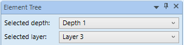
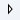
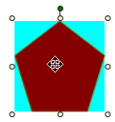
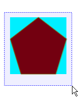
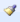

Copying, Formatting, and Placement of Elements
The Graphics Editor provides a set of elements that allow you to import images, or create shapes that are grouped together and form the building blocks for creating symbols, complex graphics and Graphic templates. Elements have properties that can be configured in the Properties View.
Select the topic related to your task:
Draw a Primitive Element
- You are in Design or Test mode and have a canvas or graphic displayed in the Graphics Editor.
- From the ribbon, in the Elements group, select one of the primitive elements (Text, Rectangle, Ellipse, Line, Path, and Polygon) you want to draw on the canvas.
- The mouse pointer changes to a crosshair
 .
. - On the canvas, click and drag the crosshair cursor to draw your shapes.
- Apply the following formatting, as needed:
- Related primitive element properties. For example, see the Text Properties for the Text element.
- Fill, stroke or background color, using the Brush Editor.
- Placement of the element on the canvas using the Layout properties group.
- Clip the element using the Clip properties group.
- Add a tooltip and description of the element in the General properties group.
- Configure selection and visibility of the element in the Graphics Viewer, from the Advanced properties group.
- Add 3D effects by playing with shadow depth, color and direction in the 3D Effects properties group.
- Adjust the thickness, joints, cap, and arrow start and end shapes of a stroke, if applicable, in the Stroke properties group.
- To create another element, do one of the following:
- With the element you just drew selected, from the Elements group, select the same or a different element to draw. When you draw the new element, shared properties are retained from the selected element and applied to the new primitive element.
- Click anywhere on the canvas so that the previous element is no longer selected, and then select another primitive element to draw.
Copy and Paste Element(s)
- You are in Design or Test mode and have one or more elements or graphical objects on the canvas you want to copy.
- Click on the element you want to copy.
- To select more than one element, while pressing CTRL, click on all the elements you want to copy.
- Right-click on the selected element(s), and from the context menu click Copy.
- Click on the current canvas, Element Tree view, or on the tab of another open graphic.
NOTE: Elements can only be pasted onto their original layer in the source graphic. The Paste to original layer is not enabled outside the source graphic. - Right-click and from the context menu select Paste and select from one of the following
- Paste to selected layer – Enabled for source graphic and other open graphics.The object(s) are pasted onto the layer selected in the Element Tree view, Selected layer dropdown menu.

- Paste to original layer – Enabled on the source graphic only. Each object(s) is pasted onto the original layer they were copied from.
- NOTE: You can also use the Ribbon’s Home tab, Edit group paste icon to make your paste selection.
- The object(s) are copied and pasted to the layer(s) as specified.
Delete an Element
- You are in Design or Test mode and have one or more elements on a canvas.
- Right-click the element you want to delete.
- The element becomes active and its control handles display around the element.
- Right-click and select Delete.
- The element is deleted from both the canvas and the Element Tree view.
Format Element Strokes
- You are in Design or Test mode and have a graphic open and would like to format an element stroke segment.
- On the graphic canvas, select the elements whose stroke lines you want to
- From the Home tab, in the Stroke group, from the Stroke Array drop-down menu, select the type a stroke type.
- The stroke type selected is applied to the elements strokes.
- From the Stroke Thickness drop-down menu, select a stroke thickness.
- The stroke thickness is applied to the element stroke.
- The following procedures depend on the element type you are working with. If the active element contains:
- A line or path element with a start and end handle, from the Start Stroke Line and the End Stroke Line drop-down menus, select an appropriate stroke shape.
- Two lines converging, as in the corners of a square or rectangle, to set the shape of the line join, from the Stroke Line Join drop-down menu, select a line join shape.
- Dashed lines, from the Stroke Dash Cap menu, select the type of cap (start and end shape) for each dash.
- The stroke of the selected elements are formatted according to your selections. Edit as needed.
Link an Element
You can configure an element on a graphic to act as a quick link to an internal data point object and display it as the new primary selection. Or, you can configure the element to open an external object, such as a website, application, or a document (for example, PDF, text files, and word processing documents).
- You are in Design or Test mode and have an element you want to link to another object.
- Click the element you want to link.
- The element becomes active and its properties display in the Properties View.
- In the Properties View, locate and display the Navigation.
- Complete the fields as follows:
- Navigation Target – Enter a data point reference, an application name and/or a file name or a Web address.
- Navigation Parameter – Only used with internal links. Enter an argument that is sent as context to the new primary selection based on the navigation target.
- Navigation Trigger – From the drop-down menu, select how the navigation should be triggered from the element. Options are: a Single click or a Double click.
- Navigation Description – (Optional) Enter a brief descriptive text that displays in the tooltip. The description displays in parenthesis, following the path to the link.
- The element is now configured so that when it is selected, one of the following occurs:
- If the navigation target is an internal link, the linked item becomes the primary selection and displays in either the primary or secondary pane.
- If the navigation target is external, the document, website, or application opens and displays.
Lock and Unlock an Element on the Canvas
You can lock an element on the canvas, so that it is not selectable during editing.
- You have a graphic open in the canvas and you have an element on the canvas you want to lock.
- Navigate to the Element Tree view.
- Click the

expander arrow of the layer that contains the element you want to lock. - All the elements associated with the layer display.
- Select the check box under the next to the elements you want to lock.
Modify Element Properties
- You are in Design or Test mode and have a graphic open.
- From the Element Tree or from the active canvas, navigate to and select the element whose properties you want to modify.
- The Properties View displays the list of associated properties.
- For each property you want like to modify, navigate to and click the property group to expand and display the associated properties.
- Modify the properties as needed.
- Click Save
 .
.
Modify or Remove a Link from an Element
- You have an element that is configured to navigate to an internal or external link, and you want to modify the link or remove the link.
- You are in Design or Test mode.
- Select the element from so that it is the primary selection.
- The element’s properties display in the Properties View.
- In the Properties View, navigate to and expand the Navigations properties.
- The Navigations properties group displays.
- Do one of the following:
- Modify the Navigation properties as needed.
- From the Navigation Target property, delete the path or link. Clear any other properties associated with the link.
- Click Save .
Modify the Angle Center
- You are in Design or Test mode, and have an open graphic containing an element with the angle center set.
- Click the element with the angle center you want to modify.
- Do one of the following:
- Click the angle center sizing handle and drag it to the desired location within the bounding rectangle.
- Press CTRL and click the angle center sizing handle to drag and snap it to the values of 0/50//100% of the bounding rectangle edge length.
- The element’s rotation angle center is modified.
- Click Save .
Move an Element
- You have one or more elements on the graphic canvas you want to move elsewhere on the canvas.
- Click-and-drag the elements over the canvas.
- A grayed-clone copy of the elements displays, while you move the element to the new location on the canvas.
- Release the mouse button.
- The clone copy disappears and the element placed in the new location.
- (Optional) To cancel the move before you release the mouse button, press the ESC key. The action is canceled.
- While pressing CTRL, drag the selected elements to another location on the canvas and then release the mouse button. The elements are copied to the canvas.
Move an Element with the Keyboard
- You want to move an element on the canvas using the UP, DOWN, LEFT, or RIGHT keys.
- You are in Design or Test mode.
- Select the element on the canvas you want to move.
- Do one of the following:
- Press the UP, DOWN, LEFT, or RIGHT arrow keys to move the element by one pixel.
- Press CTRL+UP, DOWN, LEFT, or RIGHT arrow on the keyboard to move the element relative to the grid settings.
- Click Save .
Resize Elements
You can rotate and resize one or more elements at the same time on the active canvas.
- You have a graphic open with one or more elements, and you are in Design or Test mode.
- Click the active element on the canvas and move the adorners (nodes) in the desired direction.
Notes on Resizing Elements
Elements can be resized on the active canvas using the control handles that display when you click an elements in Design mode. There are, however, a few notes and exceptions to keep in mind when resizing elements:
- The stroke thickness is never affected except for the XAML object.
- The font size is not affected by resizing - unless the global setting
 Resize Fonts is enabled from the Home tab, in the Format group.
Resize Fonts is enabled from the Home tab, in the Format group. - With the ALT key, the aspect ratio is kept. With the CTRL key, the result will be a square.
- When the new width/height is “negative” the FlipX/FlipY properties of all elements are toggled.
- Resizing a line or a polygon doesn’t change the point collection; it just changes the view. For example: Resizing the polygon width from 100 to 0 is allowed. After that, the polygon width can be resized back to 100 and the polygon looks the same as before. This behavior is also important for scripting the size.
- Resizing a Group, symbol instance property, or Combined Object affects all inner elements evenly.
- Resizing an Animation object affects all resulting Symbol instance frames with the same scale factor. This is only important if the resulting frames have different sizes (which are allowed). For example: If an Animation object is resized to one-half of its original size, all resulting frames are one-half of their original size.
- Resize selectors are not affected by the zoom level; that is they never change their size.
Rotate Elements
You can rotate one or more elements at the same time on the active canvas.
- You have a graphic open containing one or more elements, and you are in Design or Test mode.
- Click the active element on the canvas and move the rotation handle adorner in the desired direction.
Select Elements from the Canvas
There are a several ways you can select elements from the graphic canvas in Design mode.
- Click an element – the element handles display and the element is selected.
- Use the Rubber band – click-and-drag anywhere on the canvas, as you drag the mouse, a line is created. Move the mouse around the canvas until the desired elements are captured within the rubber band boundaries.


Select Elements from the Element Tree
- You have the Element Tree displayed in the Dock Panel and are in Design or Test mode, and have elements on the canvas.
- In the Element Tree, from the Selected Depth and the Selected Layer drop-down list menus, select the depth and layer that contains the elements you want to select.
- Click Show all Elements .
Show all Elements is enabled, and the elements are listed under their associated layers in the Element Tree view.
is enabled, and the elements are listed under their associated layers in the Element Tree view. - Do one of the following:
- To select one element, click the element from the displayed list.
- To select multiple elements, press the CTRL key and then click the elements you want active on the canvas.
- The elements are now active on the canvas, in the Element Tree, and the Properties View.
Set the Angle Center of an Element
Elements can be configured to rotate around a set axis, called the angle center.
- You are in Design or Test mode, and have an open graphic containing an element for which you would like to set a rotational axis.
- Click the element you want to modify.
- From the Properties view, navigate to and expand the Layout Properties.
- Enter values for the Angle Center X and Angle Center Y properties.
- The angle center adorner displays on the canvas based on the values entered above.
Use Copy Format
- You are in Design or Test mode and you have formatted an element on the active canvas and would like to apply the same formatting to other elements on the canvas.
- From the canvas, select the element whose formatting you want to copy and apply to another element on the canvas.
- On the Home tab, in the Edit group, click Copy Format

. - The properties of the element are copied and stored.
- Right-click the target element to which the formatting is to be applied, and from the Edit group, click Paste Format .
- The target element properties are updated with the new formatting.
Related Topics
For workspace overview, see the following:
For background information, see Element Types.
For keyboard shortcut information, see Keyboard Shortcuts.